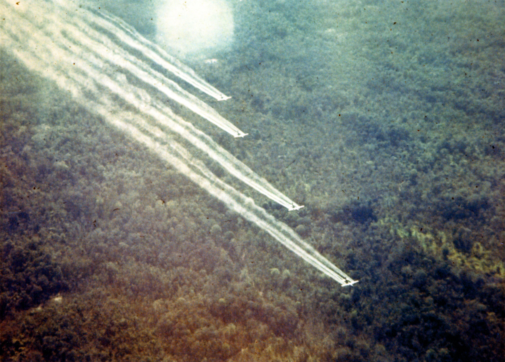
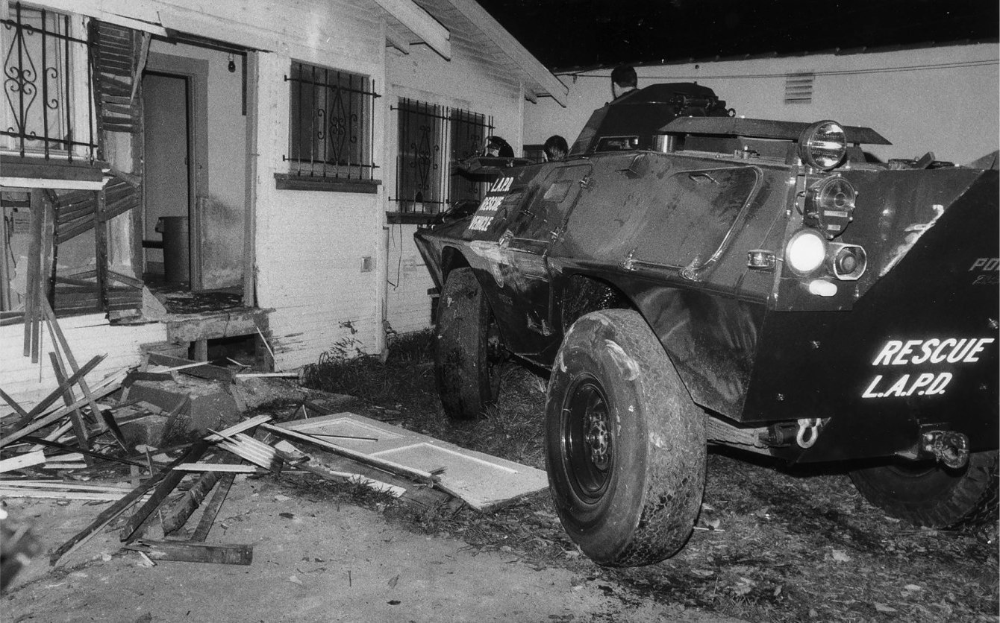
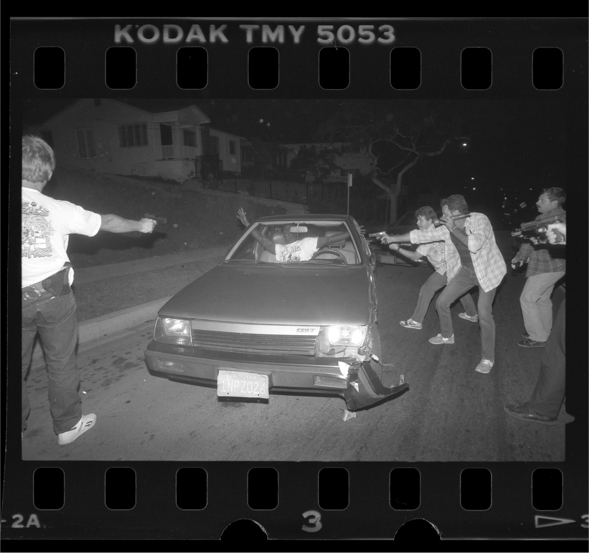
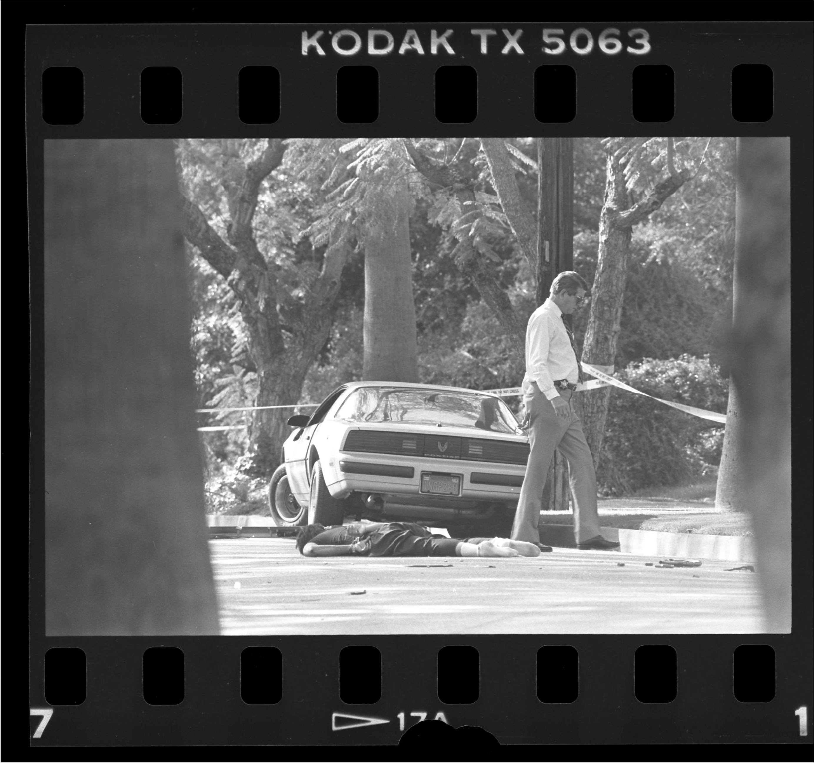
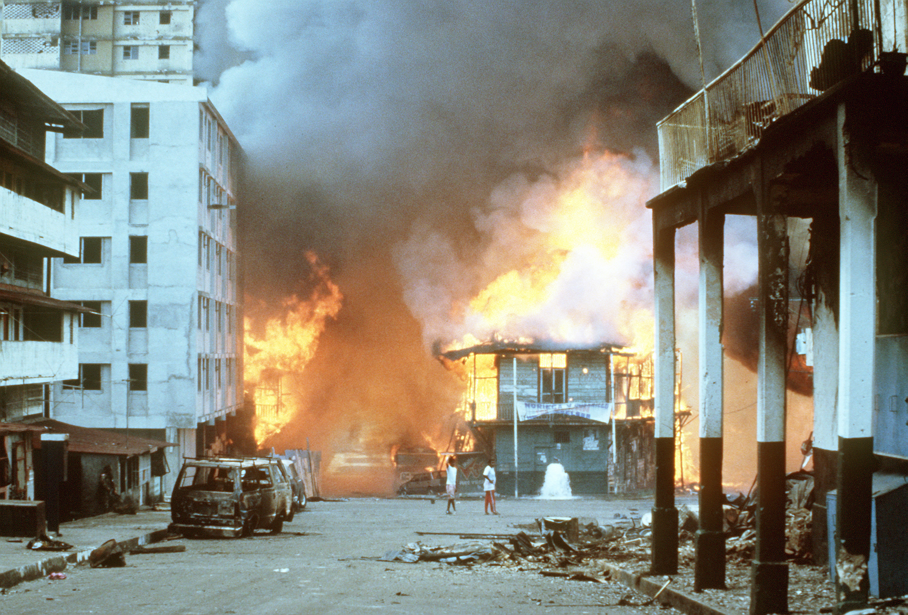
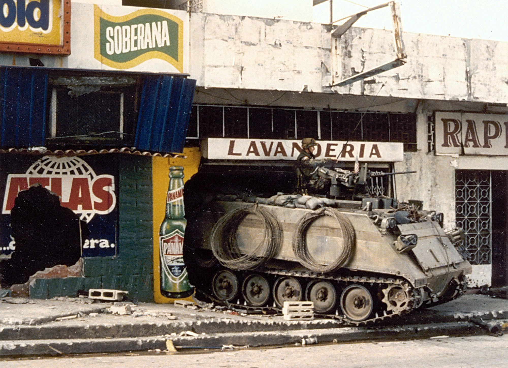
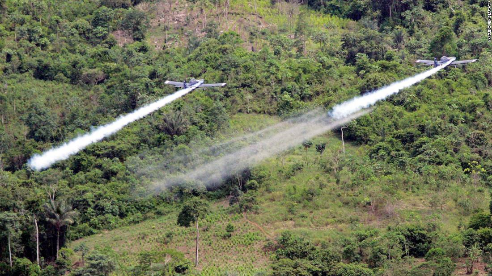
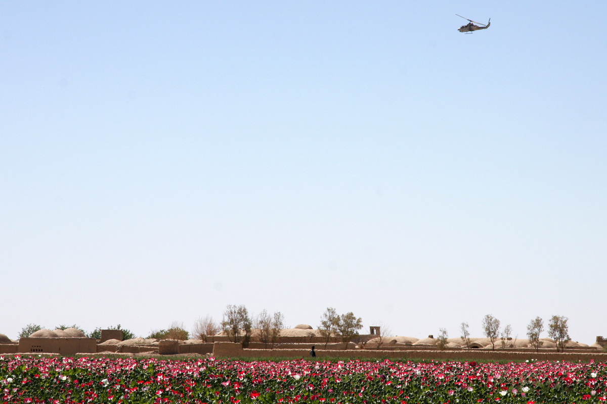
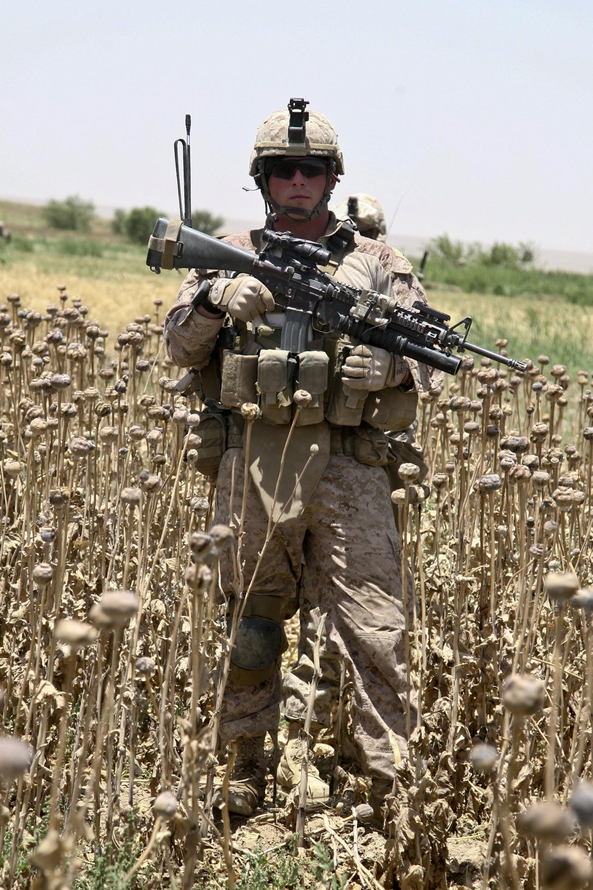

1960s, Vietnam: Defoliant spray run during the Vietnam War.

1986, Los Angeles: A Los Angeles Police Department battering ram sits next to a South LA home damaged during a police raid.

1988, Inglewood: A man suspected of buying drugs is the target of police guns after a car chase.

1988, San Marino: The body of one of two drug suspects who were shot to death during an undercover heroin investigation by the DEA lies on Monterey Road.

1989, Panama: Flames engulf a building following the outbreak of hostilities between the Panamanian Defense Force and U.S. forces on the second day of the \
<div class="tooltip"><<nobr>>@@color:DarkSeaGreen;United States Invasion of Panama@@<span class="tooltiptext">
Fittingly, two of the operations in the invasion were codenamed Operations Just Cause and Blind Logic.
</span><</nobr>></div>\
.

1989, Panama: A U.S. Army M113 armored personnel carrier guards a street near the destroyed Panamanian Defense Force headquarters building during Operation Just Cause.

2006, Colombia: Two AT- 802 planes fumigate coca fields in San Miguel, 400 miles south of Bogota, as part of Plan Colombia.

2009, Afghanistan: An Afghan poppy farmer watches an AH-1W Cobra helicopter fly over his field in Farah province. The Cobras are providing overwatch protection for Afghan National Police officers and U.S. Marines as they conduct a cordon and search in a small village.

2011, Afghanistan: A corporal stands in an opium poppy field while performing a foot patrol in the town of Sangin.
[[If you were to lance the boils they would reek resentment sickly-sweet.->0]]